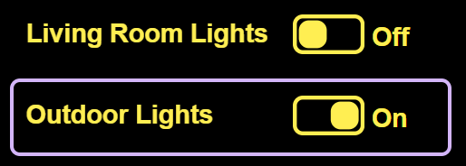
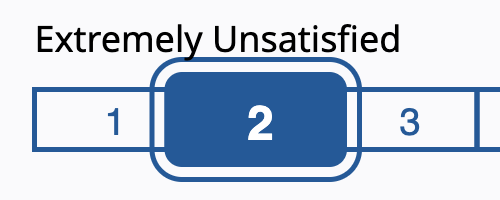

Supporting High Contrast Settings
Editor's note: After content is complete and near ready for merge, add a heading and abstract to practices.html
Introduction
People with many types of visual impairments need to override the default colors used to render web content to make content perceivable to them. Operating system provide settings to enable users to choose color themes or preset high contrast themes that are useful to them. For web content to be compatible with high contrast settings, authors must ensure their content adapts to user settings. This section explains how to ensure components respect those preferences and verify compatibility through testing.
This section covers:
- Using SVG graphics to create components whose rendering can adapt operating system color settings.
- Using
currentcolorvalue for inheriting thecolorproperty value of ancestors. - Setting the
forced-colors-adjust=autoCSS property on SVG elements. - Using the
forced-colorsCSS media query for high contrast settings. - Using
<system-colors>CSS data types for consistency with the rendering of other components in high contrast settings.
Operating System Color and High Contrast Settings
Mobile, tablet and desktop operating systems have accessibility features for users to change the colors used to render content, including the rendering ot content from web browsers. The features are found in the accessibility settings of the operating system. The following table highlights the major high contrast features in selected operating systems.
Operating System High Contrast Features
| Operating System | Accessibility Features |
|---|---|
| Android |
|
| iPhone/iPad |
|
| Apple macOS |
|
| GNOME Desktop |
|
| Microsoft Windows 10/11 |
|
SVG for Components
Bit-mapped images (e.g. .png, .jpeg) should not be used for components, since their rendering cannot be changed based on user color theme and/or high contrast settings. SVG graphics can respond to the forced-colors CSS media query and supports the use of currentcolor value for color properties. An additional advantage of SVG graphics is the smooth scaling of the graphics as the size of content adjusted using browser zoom features. SVG elements can also adapt to a wide variety of screen sizes and load faster due to their smaller size than equivalent bit-mapped images.
Note: Be sure to include forced-color-adjust=auto CSS property on SVG elements, due to inconsistencies in browsers setting the default value to auto.
currentcolor Keyword
The currentcolor keyword provides a means for components to use the color value of ancestors to set the color properties of an element. When the user chooses a high contrast setting the browser changes the color and background-color values of text content. The currentcolor value is set to the text color for use in setting the color of other properties including: border and outline on HTML elements, and stroke and fill properties on SVG elements. Note: There is no equivalent value for using the background color, so when using this technique it is important for the background of the element to be transparent to allow the background color to be visible.
Using currentcolor is the most popular technique in the ARIA APG examples for supporting user theme and high contrast settings.
Button Switch Example
The Button Switch Example uses currentcolor value to style the SVG rect elements used as the switch container and to indicate the on and off states. Current color applied to the stroke and fill properties of the rect elements. The following table shows how the graphical rendering changes for some high contrast options.
Button Switch Example with Selected High Contrast User Settings
| Operating System | Setting | Screen Shot |
|---|---|---|
| macOS 14.4 | Invert Colors: Off (default) |  |
| macOS 14.4 | Invert Colors: on |  |
| Windows 11 | Contrast Theme: none (default) |  |
| Windows 11 | Contrast Theme: Night sky |  |
| Windows 11 | Contrast Theme: Desert |  |
Examples using currentcolor keyword
forced-colors Media Query
The forced-colors CSS media query provides a means for components to use the color preferences of people with visual impairments. When the user chooses a high contrast setting in their operating system, browsers set forced-colors property to active. CSS media queries can change component colors to use operating system specified values using <system-colors> CSS data types. The advantage of using forced-colors over currentcolor is the ability to set a background color and to uniquely define colors for borders, outlines and text content.
System Colors
The following table identifies the current system colors defined in CSS Color Module Level 4. System colors are supported in all major browsers, but the actual colors they render may vary between browsers and operating systems based on default and user theme and contrast settings.
| System Color | Sample | Color | Description |
|---|
Rating Slider Example
The Rating Slider Example uses CSS forced-colors: active media query to change the styling of SVG elements used for the rating scale, thumb and labels. The buttontext system color value is used for stroke and fill properties of the range and thumb elements and canvas system color is used for the label elements (e.g. "Extremely Unsatisfied" and "Extremely Satisfied"). The following table shows how the graphical rendering changes for some high contrast options.
Rating Slider Example with Selected High Contrast User Settings
| Operating System | Setting | Screen Shot |
|---|---|---|
| macOS 14.4 | Invert Colors: Off (default) |  |
| macOS 14.4 | Invert Colors: on |

|
| Windows 11 | Contrast Theme: none (default) |

|
| Windows 11 | Contrast Theme: Night sky |

|
| Windows 11 | Contrast Theme: Desert |

|
Examples in using forced-colors
Testing for High Contrast Support
Testing for high contrast can be done in two ways
Operating System High Contrast Testing
- Windows 10 and 11: Change color contrast
- MacOS: Change display colors on Mac to make it easier to see what’s onscreen
- Linux GNOME: Adjust the contrast
- iPad: Change color on iPad to make it easier to see items onscreen
- iPhone: Change color on iPhone to make it easier to see items onscreen
- Android: Change text & display settings
Chrome High Contrast Testing
High Contrast Features
Add content